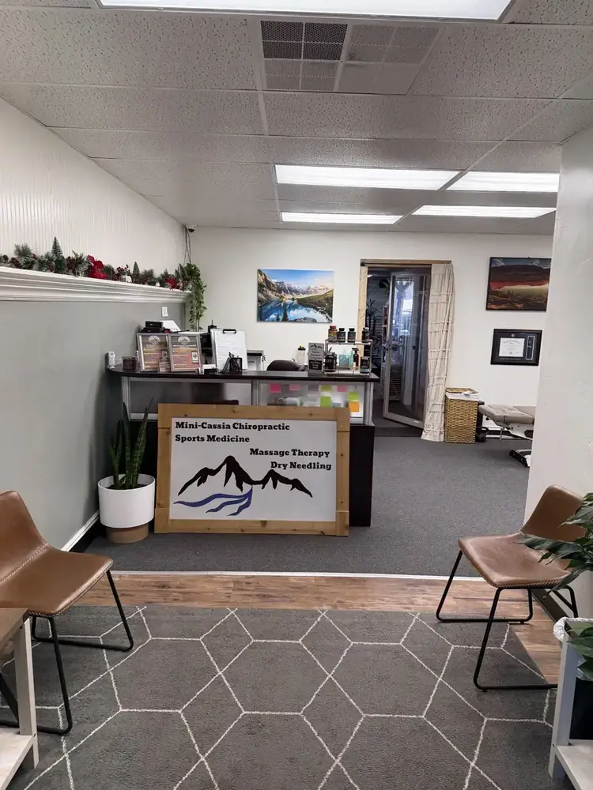
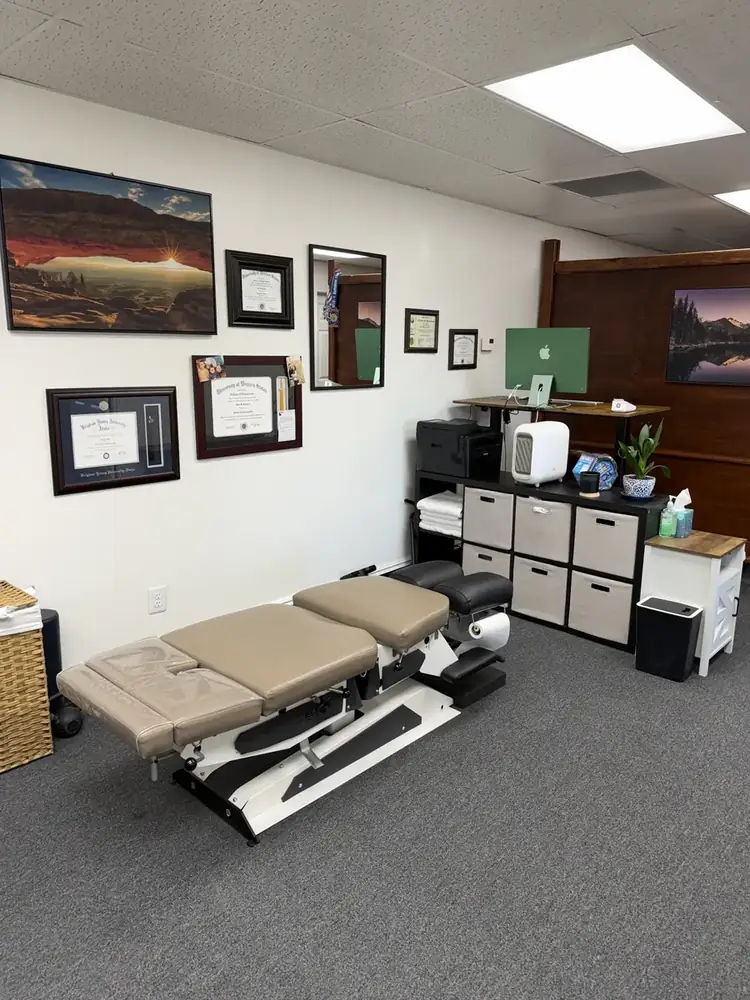
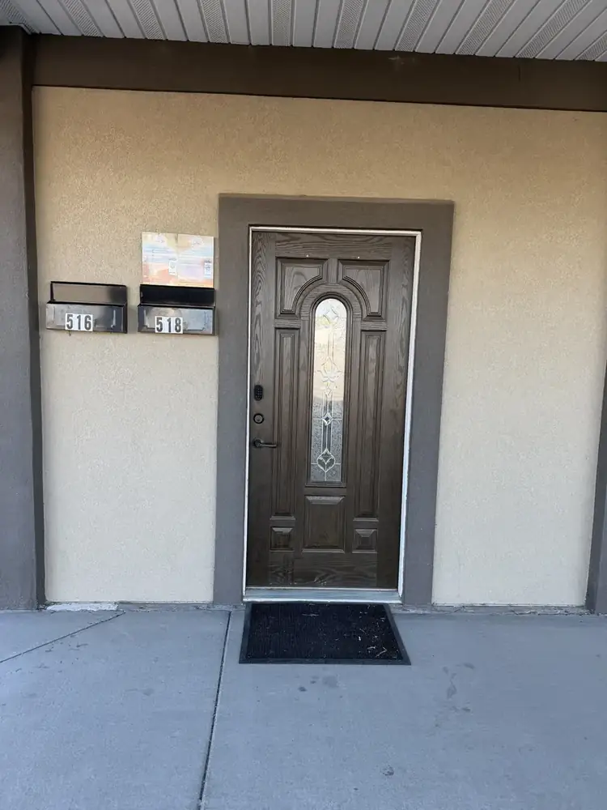

Chiropractic Care
Individualized adjustments focused on movement and function.
CARE IN THE HEART OF MINI-CASSIA
Personalized chiropractic and sports medicine care in Rupert, Idaho, from Dr. Jake Sanford, DC.
Whether you're staying active, returning to movement, or looking for a thoughtful approach to your care, you'll find a local clinic focused on listening first.
Serving Rupert, Burley, Heyburn, Paul, and nearby communities.
WHAT WE OFFER
Explore available services at our Rupert clinic. Treatment options are discussed based on your individual needs.
Individualized adjustments focused on movement and function.
An assessment-focused approach for active individuals and sports-related concerns.
Movement strategies and exercises tailored to your care plan.
An available treatment option when appropriate after evaluation.
Hands-on techniques that may be incorporated into your care plan.

A LOCAL PRACTICE IN RUPERTMEET YOUR CHIROPRACTOR
I'm Dr. Jake Sanford. At Mini-Cassia Chiropractic & Sports Medicine, I personally run the office and work with the people who come through its doors.
I believe you should feel heard, understand the options available to you, and know what to expect from your care.
A LOOK INSIDE
Know where you're going before your first appointment. Our Rupert office has an open-concept treatment area, and a private room is available when needed.


Prefer more privacy? A separate treatment room is available when needed. Mention your preference when contacting the office.
OUR COMMUNITY
Our office is located in Rupert, Idaho. We also welcome patients who travel from Burley, Heyburn, Paul, and surrounding communities.
REACH OUT
I run the office personally and may be assisting a patient when you call. Texting is the easiest way to reach me for scheduling and general questions. If I miss your call, please leave a voicemail and I'll get back to you when available.
Please don't send sensitive medical information in an initial text, voicemail, or email. A message does not confirm an appointment.
Monday, Wednesday & Friday: 10:00 AM–5:00 PM
Tuesday, Thursday & Saturday: By appointment only
Please avoid sending sensitive medical information by ordinary text message. Texting the office does not confirm an appointment.